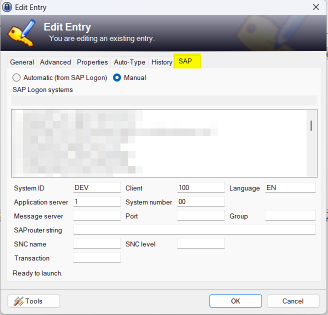
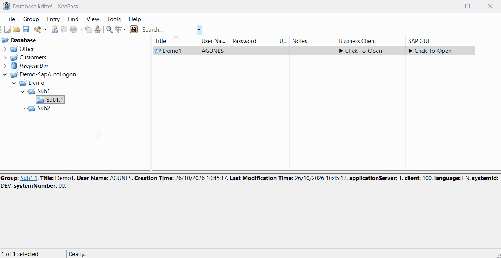
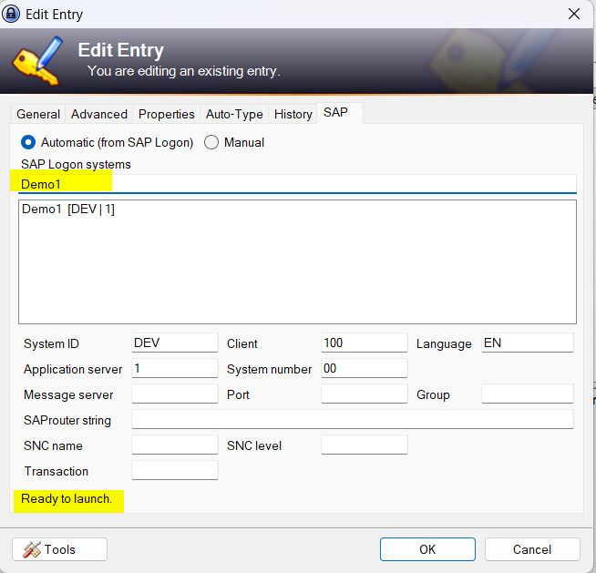
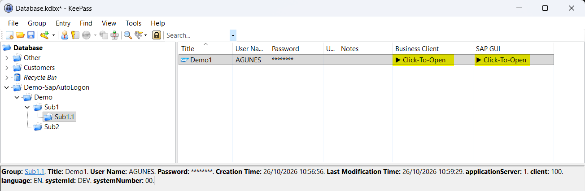

Type the fields yourself
Manual is the default. Fill in the connection fields by hand, with a status line that says when the entry is ready to launch.


Fill SAP entries from SAP Logon and start SAP GUI from KeePass.
Free, for Windows and KeePass 2.x.

Remove any older SAP launch plugin first, or both load.
| You need | For |
|---|---|
| Windows with KeePass 2.x | The plugin itself |
| SAP GUI or SAP Business Client | Launching entries |
| SAP Logon | The system list. Manual mode works without it. |
Manual is the default. Fill in the connection fields by hand, with a status line that says when the entry is ready to launch.

On the SAP tab choose Automatic, search your list and click a system. Every field stays editable.

Right-click a group and choose Import from SAP Logon, then pick a SAP Logon folder. Subfolders become groups, systems become entries.
Double-click a Click-To-Open cell, or use the right-click menu.

When SAP Logon stores none, client and language are filled in.
100 EN
SAP Logon files and the registry are never changed.
The values are normal entry fields, so the database stays readable without the plugin.
An entry launches with a system ID, a client and either a server and instance number, or a message server and group.
| Field | Holds |
|---|---|
| systemId | System ID |
| applicationServer | Server for a direct connection |
| systemNumber | Instance number |
| messageServer | Message server host |
| messageServerPort | Message server port |
| group | Logon group |
| sapRouterString | SAProuter string |
| sncName | SNC partner name |
| sncType | SNC level |
| client | Client, 100 when unset |
| language | Language, EN when unset |
| transaction | Start transaction |
An import changes the database in memory. Save it, or close without saving.
KeePass has no undo. Existing entries are never changed, but review the result first.
The default user name sits in plain text in KeePass.config.xml. Never enter a password there.
sapshcut -pw passes the password on the command line while SAP GUI starts.
Copy the DLL, restart KeePass and open the SAP tab of any entry.